Core couplings - Ideal Transformer
This section describes Ideal Transformer core coupling, including Single Phase Core Coupling, Three Phase Core Coupling, Four Phase Core Coupling, and Five Phase Core Coupling components.
Core coupling components are used to divide the circuit into sub circuits that will be simulated in separate cores of a single HIL device. In addition, the ideal transformer block of the core coupling introduces fixed time delay that is equal to one simulation step ( 0.5 µs, 1 µs or 2 µs ...) between measured variables and corresponding controlled sources, which is negligible for most practical systems. There are four core coupling in the library: single phase, three phase, four and five phase device couplings.
 These components are ignored in TyphoonSim. Offline simulators,
like TyphoonSim, use variable simulation step in their simulations, so the real-time
constraints are not a concern. As a result, model partitioning is not required for offline
simulations because there is no need to split the model to improve computational performance
within a fixed time frame. The component will remain connected, but it will be bypassed.
These components are ignored in TyphoonSim. Offline simulators,
like TyphoonSim, use variable simulation step in their simulations, so the real-time
constraints are not a concern. As a result, model partitioning is not required for offline
simulations because there is no need to split the model to improve computational performance
within a fixed time frame. The component will remain connected, but it will be bypassed.
Depending on the position, core coupling elements can introduce instabilities in the circuit. In order to verify the stability of core coupling components a coupling stability analysis tool is available. It is described in Figure 2.
For more details about coupling placement please refer to Coupling component placement and parametrization - Ideal Transformer based couplings.
When coupling components are added to the circuit topological conflicts can occur (described in Topological Conflicts). These conflicts are solved by adding snubber circuits in parallel with coupling's current source and/or in series with coupling's voltage source. Snubbers are embedded in coupling components. If the parameter Fixed snubber is set to False, then snubbers are used only when there are topological issues. If the parameter Fixed snubber is set to True, the chosen snubbers will always be in the circuit.
There are three options for snubbers for both, voltage and current source side:
- without snubber - "none"
- resistive - "R1" and "R2"
- first order filter - "R1-C1" (resistance in series with capacitor)- "R2||L1"(resistance in parallel with an inductor)
In Figure 1, a coupling building block with and without snubbers is shown.
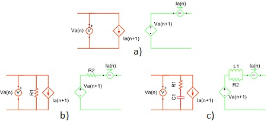
For core coupling components, a coupling stability analysis routine is available. Coupling stability analysis checks the stability of all core coupling components in the model. This option is disabled by default. It can be enabled in Schematic settings -> Circuit Solver settings -> Enable coupling stability analysis as shown in Figure 2.
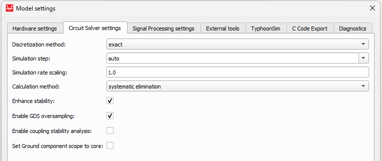
If core coupling stability analysis is enabled, then during compilation, a stability report is printed for all couplings in the circuit. For each coupling, there can be three messages: coupling element is stable, coupling element is unstable, or coupling element is around stability border. For the first two cases, the message is clear. The third case, around stability border, means that the coupling might be either stable or unstable, but it is not possible to determine exactly since it is working close to the stability border. In this case, it is recommended to make it more stable.
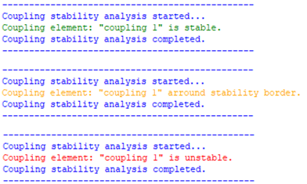
Coupling stability routine analyzes the stability through all the switch permutations present in the model. For certain switch permutations, coupling elements can be stable while for other permutations it can be unstable. If there is only one switch permutation that makes the coupling component unstable, the report will report that the component is unstable without further details. As an example, there is a simple circuit containing one switch, voltage sources, voltage measurements, resistors and a core coupling component shown in Figure 4. The stability analysis reports unstable coupling. The switch has two positions, open and closed. If the switch is closed then the coupling is stable, but if it is open, the coupling is unstable. Permutations of the circuit are shown in Figure 5. This means that even if a coupling is determined to be unstable, the model can behave correctly for some, and usually the majority, of switch permutations.
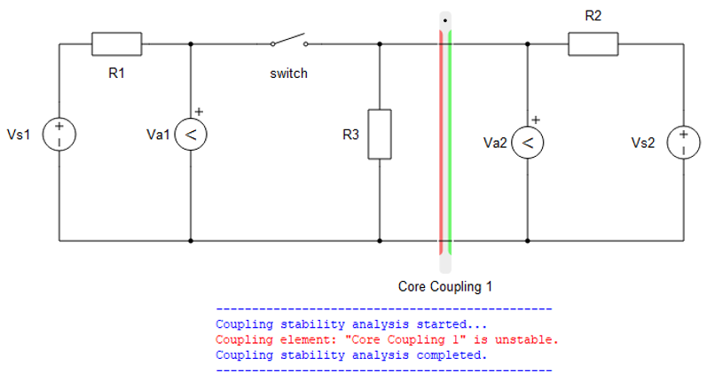
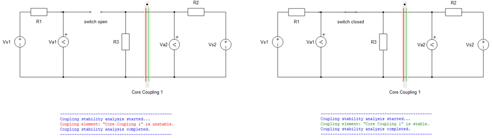
Ports
- a_in (electrical)
- Current source side input port A for Single Phase Core Coupling,
- Current source side phase A input port for Three Phase Core Coupling, Four Phase Core Coupling, and Five Phase Core Coupling.
- b_in (electrical)
- Current source side input port B for Single Phase Core Coupling,
- Current source side phase B input port for Three Phase Core Coupling, Four Phase Core Coupling, and Five Phase Core Coupling.
- c_in (electrical)
- Available on Three Phase Core Coupling, Four Phase Core Coupling, and Five Phase Core Coupling.
- Current source side phase C input port.
- d_in (electrical)
- Available on Four Phase Core Coupling and Five Phase Core Coupling.
- Current source side phase D input port.
- e_in (electrical)
- Available on Five Phase Core Coupling.
- Current source side phase E input port.
- a_out (electrical)
- Current source side output port A for Single Phase Core Coupling,
- Current source side phase A output port for Three Phase Core Coupling, Four Phase Core Coupling, and Five Phase Core Coupling.
- b_out (electrical)
- Current source side output port B for Single Phase Core Coupling,
- Current source side phase B output port for Three Phase Core Coupling, Four Phase Core Coupling, and Five Phase Core Coupling.
- c_out (electrical)
- Available on Three Phase Core Coupling, Four Phase Core Coupling, and Five Phase Core Coupling.
- Current source side phase C output port.
- d_out (electrical)
- Available on Four Phase Core Coupling and Five Phase Core Coupling.
- Current source side phase D output port.
- e_out (electrical)
- Available on Five Phase Core Coupling.
- Current source side phase E output port.
Current source side (Tab)
- Snubber type
- Specifies type of embedded snubber - none, R1 or R1-C1.
- R1
- Available if Snubber type is set to R1 or R1-C1
- Current source side resistance [Ω].
- C1
- Available if Snubber type is set to R1-C1
- Current source side capacitance [F].
- Fixed snubber
- Available if Snubber type is set to R1 or R1-C1
- Determines whether fixed or dynamic snubber is used on current source side See fixed snubber description.
Voltage source side (Tab)
- Snubber type
- Specifies type of embedded snubber - none, R2 or R2||L1.
- R2
- Available if Snubber type is set to R2.
- Voltage source side resistance [Ω].
- L1
- Available if Snubber type is set to R2||L1
- Voltage source side inductance [H].
- Fixed snubber
- Available if Snubber type is set to R2 or R2||L1
- Specifies whether fixed or dynamic snubber is used on current source side See fixed snubber description.
Single Phase Core Coupling
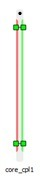
A coupling component is an ideal transformer with a transfer ratio of one, used to divide the simulated circuit into two sub-circuits. Consequently, the two sub-circuits are distributed and executed in two HIL processor cores. In addition, this ideal transformer block introduces the one time step delay (i.e. 1 µs) between measured variables and corresponding controlled sources, which is negligible for most practical systems. A schematic block diagram of the Single Phase Core Coupling is shown in Schematic block diagram of Single Phase Core Coupling.
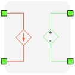
An example of coupling component usage is to split a back-to-back inverter rectifier circuit along the DC-link capacitor. Since the voltage on the capacitor cannot change instantaneously, the delay between measuring DC-link voltage and re-playing it on the secondary side of the coupling component can be easily neglected.
The number of variables exchanged between standard processing cores with Single Phase Core Coupling is 1. For more details about the maximum number of variables between two cores please refer to Maximum number of communication lines between cores and devices.
For more details about coupling placement please refer to Coupling component placement and parametrization - Ideal Transformer based couplings.
Three Phase Core Coupling
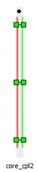
The Three Phase Core Coupling component consists of two ideal transformers with a transfer ratio of one, used to divide the circuit simulated into sub-circuits, along the three-phase connection. Consequently, sub-circuits are distributed and executed in two HIL processor cores. In addition, this ideal transformer block introduces the one time step delay (i.e. 1 µs) between measured variables and corresponding controlled sources, which is negligible for most practical systems.
The Three Phase Core Coupling component is constructed of two coupling component building blocks connected in star connection as shown in Figure 9.
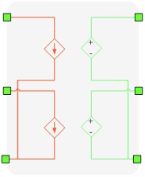
An example of three phase coupling component usage is to split a back-to-back three level NPC inverter-rectifier circuit along the DC-link capacitors. Since the voltage on the capacitors cannot change instantaneously, the delay between measuring DC-link voltage and re-playing it on the secondary side of the coupling component can be easily neglected.
The number of variables exchanged between standard processing cores with Three Phase Core Coupling is 2. For more details about the maximum number of variables between two cores please refer to Maximum number of communication lines between cores and devices.
For more details about coupling placement please refer to Coupling component placement and parametrization - Ideal Transformer based couplings.
Four Phase Core Coupling
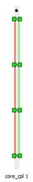
The Four Phase Core Coupling component consists of three ideal transformers with a transfer ratio of one, used to divide the simulated circuit into sub-circuits. Consequently, sub-circuits are distributed and executed in two HIL processor cores. In addition, this ideal transformer block introduces the one time step delay (i.e. 1 µs) between measured variables and corresponding controlled sources, which is negligible for most practical systems.
The Four Phase Core Coupling component is constructed of three coupling component building blocks connected in star connection as shown in Figure 11.
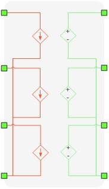
The number of variables exchanged between standard processing cores with Four Phase Core Coupling is 3. For more details about the maximum number of variables between two cores please refer to Maximum number of communication lines between cores and devices.
For more details about coupling placement please refer to Coupling component placement and parametrization - Ideal Transformer based couplings.
Five Phase Core Coupling
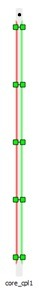
The Five Phase Core Coupling component consists of four ideal transformers with a transfer ratio of one, used to divide the simulated circuit into sub-circuits. Consequently, sub-circuits are distributed and executed in two HIL processor cores. In addition, this ideal transformer block introduces the one time step delay (i.e. 1 µs) between measured variables and corresponding controlled sources, which is negligible for most practical systems.
The Five Phase Core Coupling component is constructed of four coupling component building blocks connected in star connection as shown in Figure 13.
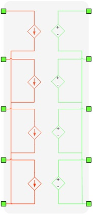
The number of variables exchanged between standard processing cores with Five Phase Core Coupling is 4. For more details about the maximum number of variables between two cores please refer to Maximum number of communication lines between cores and devices.
For more details about coupling placement please refer to Coupling component placement and parametrization - Ideal Transformer based couplings.